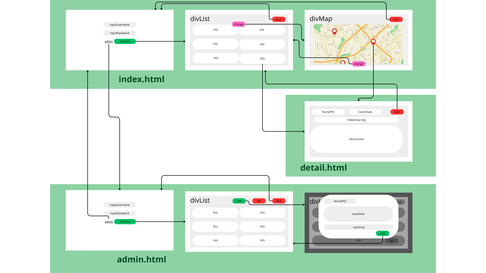

Documentazione
Nome del progetto
Qui va una breve descrizione.
- Classe/Anno: 5BINF - 23/24
- Author: Alessandro Bsoul, Mirko Maralit, Lucas Martire
- Creato: 24 novembre 2023
- Ultima modifica: 12 Dicembre 2023
Architettura informazione

UML
Diagramma di Casi d'uso

Diagramma di oggetti

Diagramma di Stato

Diagramma di Sequenza

Contenuti del progetto
Palazzo reale
Nel 1563 il duca Emanuele Filiberto stabilisce la capitale del ducato sabaudo a Torino, insediando la corte nell’antico palazzo vescovile della città. Nel 1584, per volontà di Carlo Emanuele I, viene affidato all’architetto Ascanio Vitozzi il progetto per la costruzione di un nuovo palazzo e negli anni successivi al 1643 la direzione dei lavori passa ad Amedeo di Castellamonte e poi ancora a Carlo Morello. Le sale del primo piano sono arricchite con soffitti intagliati e grandi tele allegoriche di Jan Miel e Charles Dauphin che esaltano le virtù del sovrano. Nel 1688 Daniel Seyter è chiamato da Roma per affrescare la fastosa galleria affacciata sui giardini e lavora con il genovese Bartolomeo Guidobono anche negli appartamenti del piano terra. Con la conquista del titolo regio (1713) Vittorio Amedeo II affida a Filippo Juvarra la creazione della “zona di comando” costituita dalle Segreterie, dal Teatro Regio e dagli Archivi di Stato. La carica di primo architetto regio passa poi a Benedetto Alfieri, che progetta gli apparati decorativi del secondo piano e allestisce le nuove camere degli Archivi, affrescate da Francesco De Mura e da Gregorio Guglielmi. Al tempo di Carlo Alberto (1831-1849) molti ambienti sono radicalmente rinnovati sotto la direzione di Pelagio Palagi e nel 1862 prende forma il nuovo scalone d’onore. Con il trasferimento della capitale da Torino a Firenze (1864) e poi a Roma, il palazzo perde progressivamente le sue funzioni di residenza e con la nascita della Repubblica italiana (1946) diviene proprietà dello Stato. fonte: https://museireali.beniculturali.it/palazzo-reale/
Mole antonelliana
L'edificio fu ideato da Alessandro Antonelli, noto architetto dell'ottocento, appartenente alla fede ebraica, al quale fu commissionato di progettare un nuovo tempio per gli israeliti comprensivo di una scuola interna. Antonelli quindi cercò di progettare un edificio strutturato da un'ampia parte inferiore per assolvere a questa duplice funzione di luogo sacro e d'istruzione e di ultimare il progetto con una cupola a base quadrata, in linea con lo stile architettonico di molte altre sinagoghe edificate in Europa. La storia della mole antonelliana è particolare: la costruzione dell'edificio partì a seguito dell'autorizzazione del Regio Decreto del 17 marzo 1863 e si completò parzialmente nel giro di 6 anni, con un'altezza pari a circa 70 metri. L'ambizioso progetto di Antonelli non fu particolarmente apprezzato dalla Comunità Ebraica di Torino a fronte dei numerosi costi aggiuntivi da sostenere per poter rinforzare e saldare un edificio di una portata importante. Pertanto i membri della Comunità Ebraica decisero di vendere la struttura al Comune di Torino e di costruire una nuova sinagoga nel quartiere di San Salvario. fonte: https://moleantonellianatorino.it
Palazzo Carignano
Il Palazzo Carignano, gioiello architettonico situato nel cuore di Torino, incarna un'elegante fusione di stili barocchi e neoclassici. Costruito nel XVII secolo secondi il progetto dell’architetto Guarino Guarini e successivamente modificato da Filippo Juvarra, il palazzo presenta una facciata imponente caratterizzata da colonne scanalate, timpani decorati e dettagli scolpiti, testimonianza dell’abilità degli artigiani dell’epoca. L’interno del palazzo è altrettanto affascinante, con sontuose sale ornate da stucchi, affreschi e arredi d’epoca. La celebre Sala del Risorgimento, luogo della prima seduta del Parlamento italiano nel 1861, è uno dei suoi tesori. Questo palazzo ha giocato un ruolo cruciale nella storia politica dell'Italia, servendo da sede del Regno di Sardegna e del primo Parlamento italiano. Oltre alla sua importanza storica, il Palazzo Carignano ospita il Museo Nazionale del Risorgimento Italiano, una straordinaria raccolta di oggetti e documenti legati all’unità italiana. Circondato da un affascinante giardino, il palazzo trasuda fascino e nobiltà, offrendo ai visitatori un'esperienza immersiva nella storia e nella cultura di Torino. fonti:http://www.comune.torino.it/ , https://www.museorisorgimentotorino.it/
Piazza Carlo Alberto
Piazza Carlo Alberto, nel cuore di Torino, è una delle piazze più emblematiche, con una storia che abbraccia secoli di evoluzione urbana. Caratterizzata da un'imponente statua equestre di Carlo Alberto di Savoia, opera di Carlo Marochetti, la piazza si distingue per un'atmosfera maestosa e commemorativa. Circondata da edifici storici, tra cui il Palazzo Carignano, con la sua facciata barocca, la piazza diventa un crocevia culturale. La presenza di caffè storici e negozi la rende un luogo vivace e frequentato, offrendo una vista panoramica su monumenti significativi di Torino. Nel contesto storico, durante il Risorgimento italiano, la piazza fu teatro di eventi politici cruciali, sottolineando la sua importanza nell'Italia unita. Oltre a essere sede di eventi culturali, Piazza Carlo Alberto si presenta come un punto di incontro e celebrazione, contribuendo a definire l'identità unica di Torino, ricca di significato storico, architettonico e culturale. fonti: https://www.comune.torino.it/
Via Roma
Via Roma a Torino è senza dubbio una delle vie più importanti del centro cittadino. Parte da piazza Castello e attraversa le piazze San Carlo e CLN terminando poi in piazza Carlo Felice, dove si trova la stazione ferroviaria di Porta Nuova. È una via commerciale, luogo classico dello shopping torinese. Sotto gli eleganti portici vi sono numerosi negozi che vanno dalla gastronomia alla caffetteria, dalla tecnologia alla moda, senza dimenticare i gioielli e le grandi catene. I più presenti, però, sono indubbiamente i marchi di abbigliamento, sia che si tratti di grandi firme, sia di indumenti alla portata di tutti. Recentemente, la via è stata prevalentemente pedonalizzata. È aperta al traffico veicolare esclusivamente nel tratto compreso tra piazza CLN e piazza San Carlo. Il Planetario, opera luminosa di Carmelo Giammello, illumina la via nelle notti di novembre e dicembre. È realizzato con sfere di varie dimensioni e proporzioni, illuminate dall’interno; le costellazioni sono rese leggibili dai sottili tubi che collegano gli elementi; Un insieme di piccole luci bianche puntiformi le circonda creando una “Via Lattea“ metropolitana. fonti: https://www.museotorino.it/ https://www.torinorete.it/via-roma https://mole24.it/2018/02/14/via-roma-torino-simbolo-della-cultura-della-storia-della-moda-nel-cuore-della-citta/
Piazza Vittorio Veneto
Piazza Vittorio Veneto, più comunemente chiamata soltanto Piazza Vittorio dai torinesi, è una delle piazze più belle ed importanti del capoluogo piemontese. La piazza si trova nel centro di Torino, sulle rive del Po, proprio di fronte alla Chiesa della Gran Madre (collegata con la piazza dal ponte Vittorio Emanuele I). La storia della piazza è molto antica e risale ai primi anni dell’800 quando fu inserita nel progetto di ampliamento della città verso il fiume Po. Inizialmente, e per quasi cento anni, la piazza fu intitolata a Vittorio Emanuele I per poi cambiare nome alla fine della Prima Guerra Mondiale dopo la vittoria di Vittorio Veneto (dovendo scegliere una piazza per commemorare questa battaglia fu scelta questa poiché già nota ai torinesi col semplice nome di Piazza Vittorio). La piazza è illuminata da bellissimi lampioni impero con braccio a cornucopia introdotti negli anni ’60 su progetto di Guido Chiarelli ed è circondata dai famosi portici torinesi. Con i suoi oltre 38.000 metri quadri di superficie, oggi Piazza Vittorio è luogo di aggregazione molto importante per i torinesi. Su di essa e sotto i suoi portici si trovano numerosi caffè e locali dove potersi fermare per una pausa ammirando la maestosità di questa piazza a due passi dal Po. fonti: https://www.guidatorino.com/piazza-vittorio-veneto-la-piu-grande-piazza-di-torino/
Museo Egizio
Il Museo delle Antichità Egizie di Torino, è considerato, per il valore dei suoi reperti, il più importante Museo egizio del mondo dopo quello de Il Cairo. Oggi nel Museo sono esposti circa 6500 reperti archeologici, ma oltre 26.000 sono depositati nei magazzini. I reperti coprono un periodo che va dal paleolitico fino all’epoca copta, vale a dire l’epoca dei cristiani egiziani nativi. Del museo fanno parte numerose statue, sarcofaghi e corredi funerari, mummie, papiri, amuleti, gioielli. Nel 1824 il re Carlo Felice di Savoia fondò il Museo delle Antichità Egizie di Torino, meglio noto come Museo Egizio, acquisendo una collezione di ben 5628 reperti riuniti da Bernardino Drovetti, console di Francia durante l’occupazione in Egitto. Re Carlo Felice riunì la collezione di Drovetti con altre collezioni tra cui quella di Donati e con altre antichità possedute da Casa Savoia, dando così vita al primo Museo Egizio del mondo. Alla collezione del Museo si sono poi aggiunti altri ritrovamenti effettuati tra il 1900 ed il 1935 dalla Missione Archeologica Italiana e portati in Italia. All’epoca di questi ritrovamenti i reperti archeologici ritrovati da varie spedizioni straniere venivano ripartiti tra il paese di origine della spedizione e l’Egitto. fonti: https://www.guidatorino.com/museo-egizio-torino/
Monte dei Cappuccini
Il Monte dei Cappuccini è una collina di 325 metri che sorge nella città di Torino, è molto vicino al centro storico, in prossimità del Ponte Vittorio Emanuele I, che porta alla Piazza Vittorio Veneto. Qui nasce la Chiesa di Santa Maria al Monte, i Savoia alla fine del XVI secolo donarono ai frati Cappuccini il terreno del monte, fino ad allora di proprietà privata, per far costruire un convento, dedicato a San Maurizio e terminato nel 1590. La chiesa, invece, vide la luce solo un secolo dopo, nel 1656, e per questo motivo fu costruita in stile spiccatamente barocco. Il Monte dei Cappuccini di Torino, con alla guida i frati cappuccini, fu teatro di gesta eroiche e leggendarie. I frati del convento compirono imprese memorabili durante le epidemie di peste che si abbatterono su Torino, come quella del 1630, di cui gran parte della popolazione della città cadde vittima. Data la sua altezza e la vista sulla città, il monte risultava essere luogo strategico di notevole interesse agli occhi dell’invasore francese. Vale la pena fare una passeggiata verso il Monte dei Cappuccini per visitare un altro luogo della città pieno di storia e per ammirare, oltre alla Chiesa di Santa Maria al Monte, anche il magnifico panorama che dal colle si ha su Torino. fonti:https://www.guidatorino.com/il-monte-dei-cappuccini-e-la-chiesa-di-santa-maria-al-monte/
Duomo di San Giovanni Battista
L’attuale Duomo, primo esempio di architettura rinascimentale a Torino, fu edificato per volere del vescovo Domenico della Rovere sull’area di tre chiese medievali dedicate al Salvatore, a San Giovanni Battista e a Santa Maria. Il progetto, affidato all’architetto toscano Meo del Caprina, venne realizzato tra il 1491 e il 1498. Nel secolo XVII l’edificio fu ristrutturato con l’aggiunta della cappella della Sacra Sindone di Guarino Guarini che collega la cattedrale al Palazzo Reale. Il campanile di Sant’Andrea, ultimato nel 1469, venne sopraelevato nel 1720 su progetto di Filippo Juvarra. La facciata, su cui aprono tre eleganti portali, con il suo rivestimento in marmo bianco costituiva un’anomalia rispetto ai coevi edifici in mattone. L’interno, ad impianto basilicale, è a croce latina a tre navate con elementi gotici. Le cappelle laterali ospitano altari devozionali; al secondo altare della navata destra polittico della Compagnia dei Calzolai di Martino Spanzotti e Defendente Ferrari. Le scale laterali al fondo del presbiterio conducono alla cappella della Sacra Sindone. Costruito tra il 1668 e il 1694 su progetto di Guarino Guarini, è un capolavoro di architettura barocca. La Cappella della Sindone, attualmente, è accessibile esclusivamente dal percorso dei Musei Reali. fonte : https://www.turismotorino.org/it/esperienze/cultura/spiritualita/i-luoghi-dello-spirito/duomo-di-san-giovanni-battista
Wireframes
Il progetto
In questa sezione vanno inserite ulteriori informazioni aggiuntive (es. credenziali) ed il link al progetto